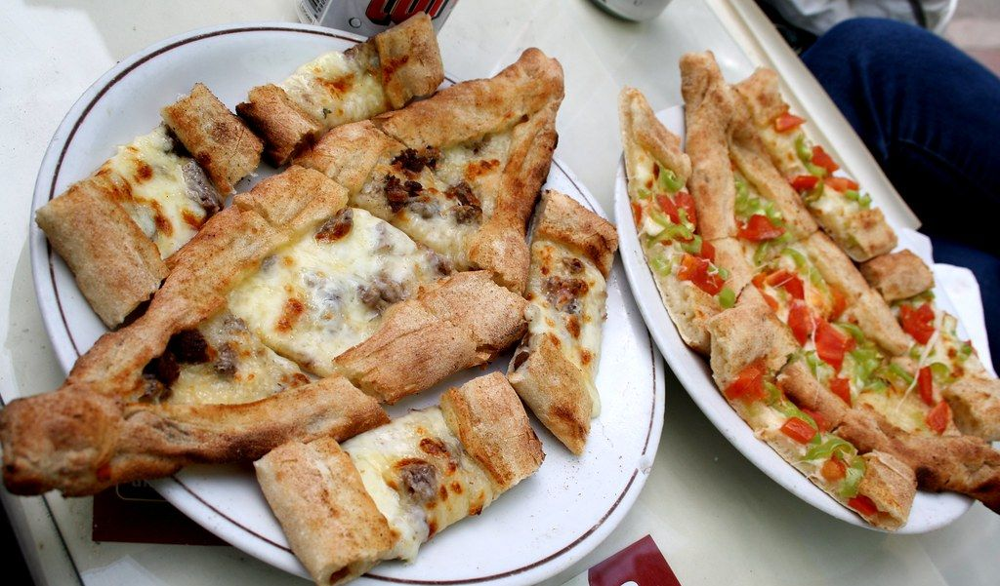

Toplantıya, ekibe, ofise: toplu yemek talebi
Kişi sayısını girin; pide, döner ve çorba için kaba bir liste önerelim. Tarihi ve saati ekleyin, talebiniz WhatsApp mesajı olarak hazırlansın. Uygunluğu ve ayrıntıları birlikte netleştiririz.
Planlayıcı ve talep fişi
Kişi başı bir ana yemek varsayımıyla çalışan kaba bir hesap. İştaha, saate ve menü tercihine göre değişir; kesin miktarı birlikte konuşuruz.
Kaç kişisiniz?
Önerilen liste
- Kişi sayısını girin, liste burada çıksın.
Etkinlik bilgileri
Talep fişi
Kişi sayısını girdiğinizde talep mesajınız burada yazılır.
Talep mesajı bir ön bilgidir; uygunluk, menü ve tutar konuşulduktan sonra kesinleşir.
Toplu siparişten önce sekiz soru
Toplantı ya da ekip yemeği planlarken en çok unutulanlar. İşaretledikçe üstü çizilir; listenin hepsi talep mesajınızın not kısmına yazılabilir.
Toplantı masasında pide
Pide, ortaya konup paylaşılmak için yapılmış bir yemektir. Kalabalık bir masada işinizi kolaylaştıracak birkaç alışkanlık:
- Kaşarlı ve karışık pideler sıcakken daha keyifli yenir; yemeği toplantı arasına denk getirin.
- Çeşitleri karıştırın: herkes birkaç dilimle farklı tatlara bakabilir.
- Dilimli pide tabak gerektirmez; peçete çoğu zaman yeterlidir.
- Lahmacun ortaya konduğunda maydanoz ve limonla dürüm yapılarak paylaşılır.
- Çorba isterseniz kapaklı kap ve kaşık ihtiyacını mesajda belirtin.
- Etsiz yiyecek kişilerin pidelerini ayrı paketlemeyi rica edin; karışmasın.

Toplu yemekte merak edilenler
Kaç kişiye kadar yemek hazırlanabilir?
Kişi sayısını, tarihi ve saati yazın; uygunluğu size bildirelim.
Ne kadar önceden yazmalıyız?
Ne kadar erken yazarsanız planlaması o kadar kolay olur; özellikle öğle saatlerine denk gelen talepler için.
Planlayıcının önerdiği liste kesin mi?
Hayır. Kişi başı bir ana yemek varsayımıyla çıkarılan kaba bir öneridir; menü ve miktar birlikte netleşir.
Pazar günü toplu yemek alabilir miyiz?
Pazar günleri kapalıyız. Pazartesi'den Cumartesi'ye 08:00–21:00 arası için talep iletebilirsiniz.
Menüde olmayan bir şey isteyebilir miyiz?
Not kısmına yazın; yapılabilirse size bilgi verelim.